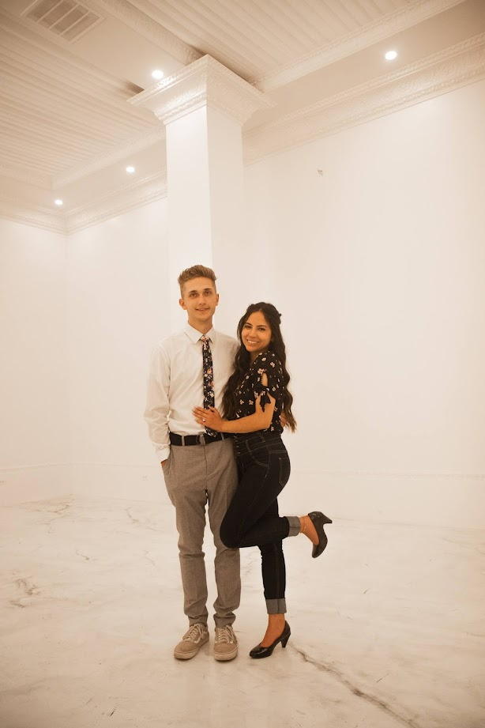
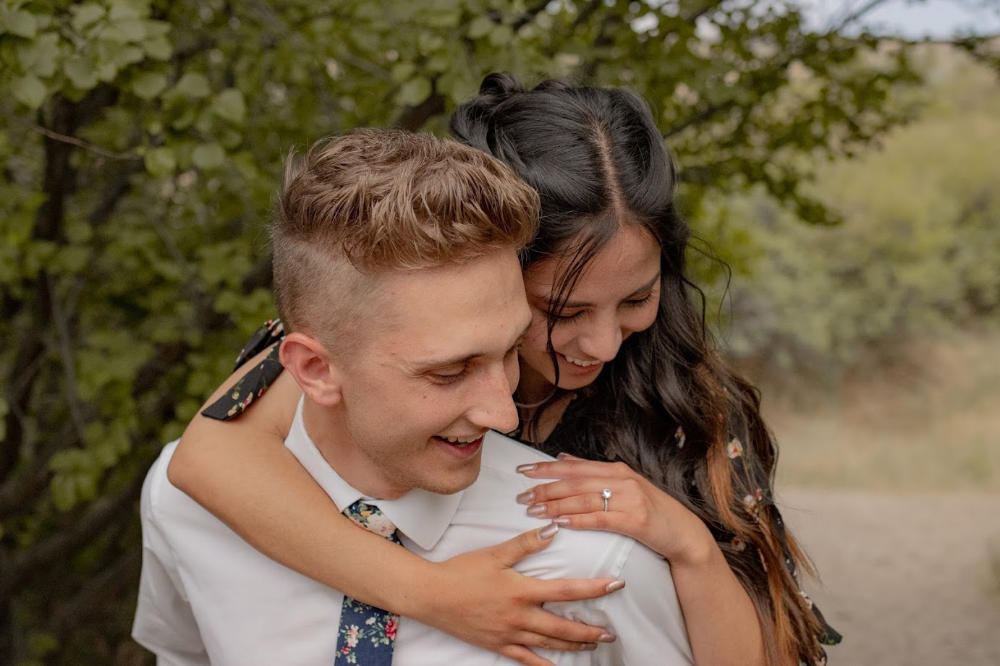
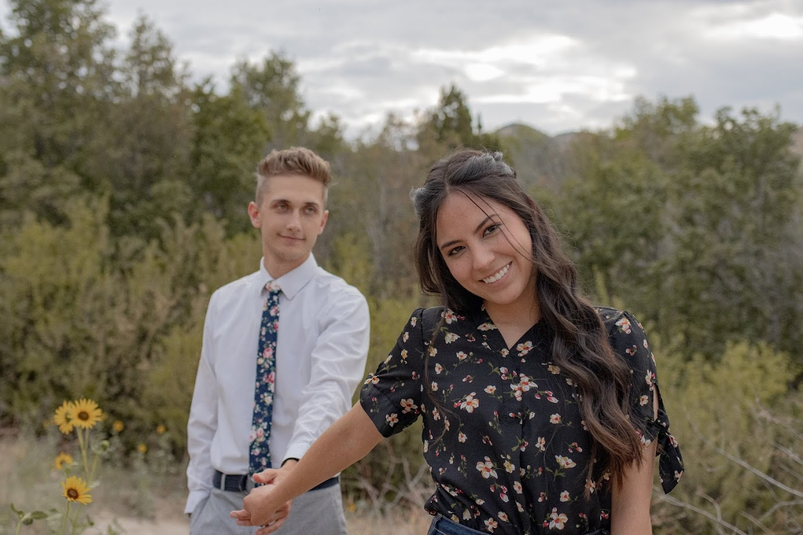
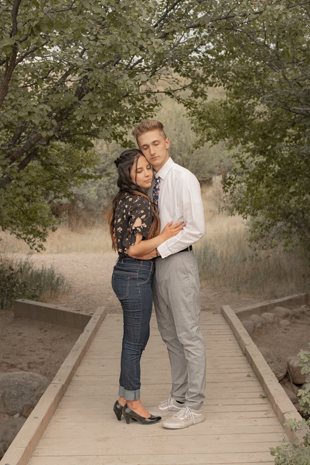

Portafolio Cultural
de Karson Ballard
Entrevistas
ENTREVISTA 1
Resumen de la entrevista:
Yo entrevisté a mi esposa Nohelia Ballard. Ella es de una ciudad que se llama Cuenca, Ecuador. Tiene tres hermanos mayores que tienen 38, 36 y 34 años. Sus padres son conversos a la iglesia. El papá de mi esposa es un joyero. Ella está estudiando educación especial en la universidad de Utah Valley. Empezó su tiempo aquí en los EE. UU. hace 9 años. En aquel entonces vino a estudiar el inglés aquí en Provo, Utah. Nohelia también hizo su misión en Los Ángeles, California donde nos conocimos. Nohelia dice que le encantan las casas aquí en este país porque todos tienen banderas afuera en el jardín y también dice que las casas no tienen reja como en Ecuador.
Reflexión sobre la entrevista:
Me encantó entrevistar a Nohelia porque ella ha tenido muchas experiencias bonitas durante su tiempo en los EE. UU. Me di cuenta que mi país natal es muy diferente que el suyo. Aquí las casas son hechas de madera en vez de ladrillo. También dice Nohelia que los Estados Unidos es un país desarrollado. Aunque los Estados Unidos no es un país perfecto, sus comentarios me hizo reflexionar sobre las bendiciones que tengo como ciudadano. Tambien aprendí que en su cultura es una tradición traer regalos para las personas que les ayudan durante un viaje.
ENTREVISTA 2
Resumen de la entrevista:
Nohelia me contó una historia de su niñez que me gustó mucho. El evento ocurrió cuando tenía diez años. En su escuela tienen una festividad que se llama “Jornadas Deportivas” en el cual los alumnos de cada clase organizan equipos de fútbol. Cada clase escoge una niña para representarla. Esta niña llega a ser la “madrina” de la clase. La madrina concursa con otras madrinas de las otras clases para ganar un premio para sus compañeros. Cada participante gana puntos si escoge vestirse con el traje típico de la ciudad. Mi esposa fue escogida para ser la madrina de su clase y ganó la competencia. Este evento tuvo lugar en su escuela en Cuenca, Ecuador. Ella dice que siempre quiso ser la madrina de su clase. Me dijo que su victoria fue una motivación para continuar participando los años siguientes. Ella aprendió que le gusta saber que si puede ganar algo, lo puede compartir con otras personas.
Reflexión sobre la entrevista:
Durante la entrevista, me sentí sorprendido porque no sabía que mi esposa había participado en este evento. Estoy orgulloso de ella porque sé que ella puede lograr cualquier meta que tenga. Creo que es chévere que en Ecuador tengan una actividad donde las clases de una escuela se puedan juntar y formar un equipo unido. También creo que es genial que la ropa típica de la ciudad donde mi esposa creció es parte de la competencia. Aquí en los Estados Unidos no tenemos una forma tradicional de vestirse, entonces me gustó saber que en Ecuador la gente está tratando de preservar sus tradiciones. Estoy emocionado por experimentar la cultura de mi esposa.
ENTREVISTA 3
Resumen de la entrevista:
Empecé a hablar con mi esposa Nohelia sobre la comida típica de Ecuador. Me dijo que la base de la comida ecuatoriana es arroz y papas. Los ecuatorianos tienen la comida más grande en el almuerzo y la cena generalmente es sopa. Usualmente no comen postre a menos que sea una ocasión especial. Toman jugos naturales con las comidas. El desayuno siempre es dulce, similar a lo que comemos aquí en los Estados Unidos. Esta comida tradicionalmente incluye una bebida que se llama colada que está hecha a base de maíz y fruta. Le pregunté sobre sus pasatiempos y me dijo que le gusta la música y que le gusta bailar. La bachata es su baile favorito. También a mi esposa le encanta cocinar y aprender a hacer los platillos típicos de los Estados Unidos. Hablamos de nuestras experiencias cocinando juntos. Algunos platos nos salieron bien, otros no! En cuanto al sistema escolar, quise comparar el sistema de aquí con el sistema escolar que mi esposa experimentó. Allí en Ecuador, llevan uniformes a la escuela. Al inicio del año tienen un horario fijo. Esto significa que no escogen sus clases. Esto me sorprendió mucho porque aquí en el colegio escogemos algunas de las clases que queremos tomar. Como ella quiere ser maestra la educación es un tema muy importante para mi esposa. Me dijo que era más difícil allí saber qué tarea les habían asignado y saber su nota en la clase porque no tenían una plataforma en línea. Me dí cuenta que es una bendición poder saber como me está yendo con mis clases.
Reflexión sobre la entrevista:
Al escuchar a mi esposa hablar de la comida de Ecuador, me dí cuenta que hay una gran diferencia en nuestras culturas en cuanto a las comidas. Aquí en este país la comida más grande es la cena cuando toda la familia está junta. En Ecuador el almuerzo es la comida más grande. Los ecuatorianos comen dulce para el desayuno tal como aquí. Me interesa mucho que hay algunas cosas muy similares y otras cosas muy diferentes en nuestras culturas. Por ejemplo en la escuela en Ecuador uno tiene que llevar un uniforme a la escuela todos los días. Aquí no es necesario llevar uniforme. En la primaria aquí tenemos un horario fijo como en Ecuador pero cuando uno llega al colegio uno puede empezar a escoger las clases que les gusta. También en los Estados Unidos la música es una parte importante de nuestras vidas. Esta entrevista me hizo entender que hay ciertas cosas que son iguales en mi cultura cuando la comparo a la cultura de mi esposa.
ENTREVISTA 4
Resumen de la entrevista:
Mi esposa dijo que a ella le encanta el orden que existe en los Estados Unidos. Hablamos de cómo son las cosas en Ecuador y me dijo que uno puede pagar al policía para escapar. Me contó de su tío que vino a los EE. UU. cuando ella era pequeña. A él le costó mucho acostumbrarse al país porque no hablaba inglés y tuvo que aprender a seguir las diferentes leyes de los Estados Unidos. Cuando su tío volvió a Ecuador le contó a mi esposa como eran las cosas en este país. Entre las historias de su tío y las películas en el televisor, mi esposa tuvo una experiencia bastante parecida a lo que ella imaginaba. Una de las cosas diferentes de la cultura americana es que la cena es nuestra comida más grande y muchas veces comemos comida rapida. En Ecuador, el almuerzo es la comida más importante del día y es comida lenta. Mi esposa también dice que las casas son muy diferentes aquí, porque están hechas de madera. En los Estados Unidos, especialmente entre los cristianos, la navidad es el día festivo que más se celebra. Sin embargo en Ecuador se celebra el año viejo como el día festivo central.
Reflexión sobre la entrevista:
Durante esta entrevista me sentí interesado en las diferencias entre mi país de origen y el de mi esposa. Es difícil imaginar los cambios que uno tiene que hacer al llegar a otro país. Algo que me llamó la atención cuando estuve hablando con mi esposa fue las diferencias entre los días festivos. La navidad siempre ha sido el día festivo más significativo para mi. Para mi es muy interesante que en la cultura de mi esposa, se celebra el año viejo en una manera muy significativa.